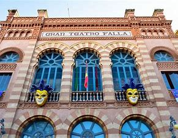

El Yuyu
 El Selu en su chirigota "Los enteraos"
El Selu en su chirigota "Los enteraos"
Lleva desde 1995 trabajando como guionista con Los Morancos, ha realizado guiones para diversas productoras de televisión y reconocidos artistas, y es colaborador en el programa El pelotazo en Canal Sur Radio, aunque actualmente se dedica únicamente al mundo del carnaval.
Aunque el propio artista nunca creía que iba a vivir de ser chirigotero, su mayor fuente de trabajo y de ingresos es su chirigota ya que trabaja durante el año por toda España haciendo tres y cuatro actuaciones a la semana.
José Luis García debutó en el carnaval en 1980 con 17 años, sin embargo no se inicia como chirigotero sino en la modalidad de comparsa a la que dedicó una década de su vida. Como comparsista formó parte del grupo de Enrique Villegas y fue autor de música en comparsas como "De un cuento". En el año 1988, tiene la tentación de dejar el carnaval por amor, aunque finalmente no se retira y decide para el próximo año compaginar comparsa y chirigota. En este punto ya había conseguido varios éxitos y decide meter a sus amigos en la chirigota hasta juntar 18 miembros. Este es el germen del grupo actual integrado por amigos junto a los que lleva más de treinta años.
En 1989 monta la chirigota "Los sanmolontropos verdes" con música firmada por él y letra de Erasmo Ubera Morón y José Guerrero Roldán El Yuyu, una agrupación muy extraña que llama la atención y entra en la final del Concurso Oficial de Agrupaciones del Carnaval (COAC), de manera inesperada, sorprendiendo a propios y extraños. Siguiendo con esa línea de locura y surrealismo, al año siguiente saca la chirigota "Carnaval 2036 Piconeros Galácticos". Los componentes se preguntan si pueden salir los 18 en el Gran Teatro Falla y deciden hacer dos chirigotas. Les supuso un grandísimo esfuerzo y crean "Ballet zum zum malacatum" y "El que la lleva la entiende" (Los borrachos), en las que llevan la misma línea surrealista. Así, con la agrupación "Los borrachos", crea en el año 1992 una chirigota atípica, tratando de suscribir todo el repertorio al personaje y con la que consigue ganar por primera vez el primer premio en el COAC. Esa fue la primera vez que realiza este modelo de chirigota que luego ha seguido haciendo, tomando como base de sus guiones no decir nunca lo que piensa, sino lo que piensa el personaje, bien sea un rico, un «enterao», un «lacio», o cualquiera de los personajes que ha incluido en las chirigotas, siempre basados en personas de su entorno más cercano e incluso algunos autobiográficos. A partir de aquí hay una escisión, decide construir toda la chirigota entorno al personaje y basarse en la interpretación a la hora de llevar a escena la agrupación. Esto es según la crítica el secreto de la agrupación que en palabras de El Diario de Cádiz "se ríe primero siempre de sí misma, aunque luego se deje caer sobre otras cosas, ya literalmente de segundas. El mayor éxito cosechado es precisamente en 1992, con "Los borrachos", considerada una de las mejores chirigotas de la historia del carnaval gaditano. Al año siguiente Selu se enfrenta a todo un reto para superar el nivel demostrado con "El que la lleva la entiende" y para ello, participa en el COAC con su primera chirigota escrita en solitario: "Con el sudor del de enfrente", conocida popularmente como Los ricos, intentando sacar, dos años seguidos, cosas totalmente opuestas. Con esta agrupación consigue por primera vez un primer premio con una chirigota escrita solamente por él. En 1994 saca "Los titis de Cádiz", con la que consigue un segundo premio y al año siguiente con "Los lacios" vuelve a alcanzar el primer premio. Esta última fue una de las chirigotas más complicadas para Selu porque «el lacio» es un personaje muy subjetivo, de hecho cada miembro de la chirigota lo interpreta de una forma. Después llegan "Las marujas" y algunos años después, otra chirigota muy bien valorada por el público y el jurado, "Lo que diga mi mujer" con la que por cuarta vez, alcanza el primer premio, en 2004. En 2006, con la chirigota "Los que cosen pa' la calle", trata de sacar el arte del «mariquita» gaditano y reivindicar los derechos del colectivo LGTB. En la edición del año 2009, el Selu crea "Los enteraos", chirigota que el propio artista considera la mejor de su trayectoria carnavalesca y con la que queda en tercer lugar en el COAC, por debajo de "Salón de Belleza El Tijerita" de Kike Remolino y "Las Muchachas del Congelao" de Antonio Pedro Serrano. Este premio fue muy discutido y calificado de "cajonazo" por el mundo del Carnaval y el pueblo de Cádiz, que consideró que la agrupación debía haber alcanzado cotas más altas en el concurso. En el año 2010 además de ser el pregonero del carnaval saca la chirigota "Los que no se enteran". De nuevo recurre a una propuesta contraria a la del año anterior y con la que alcanza también el tercer premio. En el año 2011 con los cantautores de "Número uno en ventas (y gasolineras)" se queda a las puertas de la final y en 2012 lleva a las tablas del Falla "Viva la Pepi", unas las limpiadoras del Oratorio de San Felipe muy atareadas por el Bicentenario de la Constitución Española de 1812, que llegan a obtener el segundo premio. Entre las agrupaciones más recientes del autor destacan la chirigota "Ahora es cuando se está bien aquí", que en 2015 llegó a conseguir un tercer premio con su tipo de señoras sentadas a la orilla de La Caleta. En 2016, tras llevar 12 años sin alcanzar el primer premio, triunfa nuevamente con su chirigota "Si me pongo pesao me lo dices", dejando al personaje Juan en la memoria de los aficionados de la fiesta. En 2018 sacó la chirigota "Grupo de Guasa", con la que sorprendió subiendo a las tablas del Gran Teatro Falla disfrazado de Donald Trump y presentando un grupo de líderes mundiales que se llevaron el tercer premio. En 2019 el autor vuelve a recurrir a la "fauna callejera" a la que tanto partido ha sabido sacarle a lo largo de su trayectoria para llevar al Falla a "Los quemasangre". Una chirigota con la que este grupo celebra 30 años sobre las tablas llevándose otro tercer premio. Para 2020 la propuesta del grupo fue "Estrés por cuatro", una chirigota que según declaró el autor les sirvió para "sacarle provecho al estrés y canalizarlo" además de para hacerse con el cuarto puesto en el COAC.|  |
El Yuyu |
||